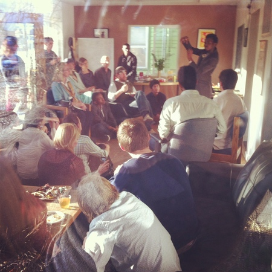

Dear people @ Dojo,
Greg Berry told me about you and advised me to get in touch. My name is Martin Cadee and I'll be bringing a group of 6 international students (17-19) from the United World College in Montezuma, NM, to Boulder next week. They're all part of a Social Entrepreneurship Incubator that I'm piloting there. Together with Greg Berry (the Hub ) and Teju Ravilochan (Unreasonable Institute) we're organizing a meet & pitch. I'm still looking for a space for that event. Greg told me you might have a space available and could be the perfect fit.
Warm greetings!
Martin
I'd never met Martin nor heard of the Social Entrepreneurship Incubator at the UWC in New Mexico, but it turns out Martin and I know a number of people in common and it felt like a perfect fit, indeed. This is exactly the kind of thing we love to support at dojo4. Community gatherings of innovative entrepreneurs of all ages embody our thinking about the vast possibility that comes from engaging in fearless thinking and the willingness to see problems as workable opportunities.
Less than a week after getting this email from Martin, our space if full of people from all over the world, laughing cheerfully and listening attentively as each person introduces themselves before we hear presentations from each of the 6 UWC students. We have lawyers, local business leaders, journalists, students, activists, friends and family filing every last chair, even sitting on the floor to hear the presentations that range from a proposal to open reopen a defunct library for young people in Palestine to continuing an ongoing micro-lending operation in Nigeria.And the presentations are good- unusually good.
One of the students, Andrew Nalani from Uganda, wrapped it up by talking about the shoulders he stands on that support him in believing in himself, following his inspirations and making real breakthroughs and innovation happen. We stand there, too, and are committed to becoming these shoulders ourselves.